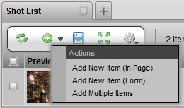
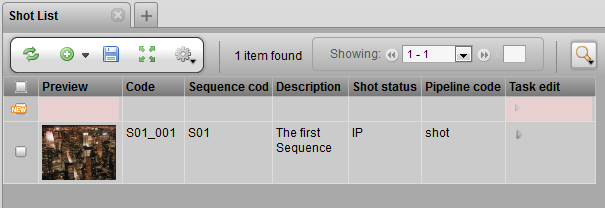
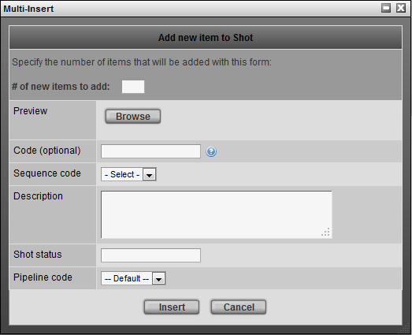

TACTIC provides many ways to insert new items. For the beginner, insertion of a new item can done through a form that guides you through each input field. For the more advanced used, insertion of an item can be done directly inline in the view. The various methods to insert items are described below.
The insert button is on the tool shelf. It is the button with the green circle, with a white plus sign inscribed. Clicking on the button bring up a form to guide you through each input field. The down arrow triangle next to the button allow you to do the insert in different ways.

Each option of the Insert menu is described in detail below.
This insert menu option adds a new row directly into the page that you are viewing. The advanced user would be more comfortable using this method.

Once in this insert mode, refer to the column headers as a guideline as to the type of data to enter into the input field.

All input fields are optional. If no data is entered into an input field where one would be required, such as Code, an appropriate default will be automatically generated.
note: Hitting the green plus sign will insert multiple rows into the view. This facilitates inputing data for multiple new items quickly.

This menu option open a window which guides you through the data to enter for each input field. This method of inserting an item is a good place to start for the beginner.

Once the insertion form pops up, the description on the left hand side can be used as a guide as to the type of data to enter into the input field.

All input fields are optional. If no data is entered into an input field where one would be required, such as Code, an appropriate default will be automatically generated.
The Multi-Insert pop-up window, allows you to add the same item multiple times.

The most important value that must be entered is one for the Multiplier field.
The number entered into the Multiplier box determines how many items that will be created.
Sequence code will determine which sequence the items will be placed under.
The Code value will be incremented by the value that is entered into the Multiplier.
*Note - The value for Code must start with a letter.
All the other values are optional.